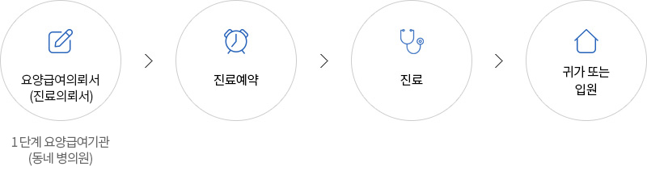

예약안내
예약안내
진료예약은 방문, 전화, 인터넷을 통해 하실 수 있습니다.
보다 빠른 예약을 위해 환자의 등록번호 또는 주민등록번호와 주소, 전화번호를 알려주십시오.
진료의 대상은 만 18세를 기준으로 어른과 어린이가 구분됩니다. (단, 만 16~18세는 본원, 어린이병원 예약이 모두 가능합니다.)
-
방문예약
요양급여의뢰서(진료의뢰서) 및 신분증을 지참하고 방문하시어, 진료신청서 작성 후 원무라운지 또는
원무창구에 제출하시면 됩니다. - 평 일: 오전 8시 ~ 오후 6시
- 토요일: 오전 8시 ~ 오후 1시
- <원무라운지 위치안내>
- 성 인: [대한외래] B3층 심전도실 옆
- 암병원: [암병원] B1층 진료협력센터 옆
- <원무창구 위치안내>
- 성 인: [본관] 1층 로비, [대한외래] B2층 채혈실 옆, [대한외래] B3층 심전도실 옆
- 소 아: [어린이병원] 1층 로비
- 암병원: [암병원] 1층 로비
예약취소
-
인터넷예약자는 물론 전화예약하신 분들도 홈페이지에서 간편하게 예약을 취소하실 수 있습니다.
※인터넷을 통한 예약취소는 진료일 전 자정(12시)까지만 가능 - 단, 진료와 함께 검사가 예약되어 있는 경우나 진료비를 사전에 수납하신 경우는 인터넷 예약취소가 불가하오니 예약센터(1588-5700)로 전화주시기 바랍니다.
- 소중한 진료시간이 다른 분께 양보될 수 있도록 가능한 빨리 취소의사를 밝혀주십시오.
- 예약변경/취소 없이 진료를 받지 않을 경우 홈페이지 진료예약서비스가 제한됩니다.